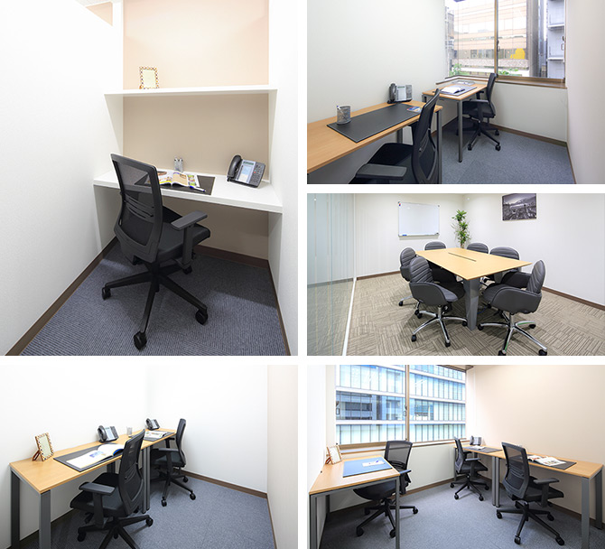

【個室レンタルオフィス】
オープンオフィス名古屋丸の内
オープンオフィス名古屋丸の内がNEW OPEN
オープンオフィス名古屋丸の内ビジネスセンターは、地下鉄桜通線「丸の内」駅からは徒歩3分。
名古屋の幹線道路である桜通から一本入った「伝馬町通り」に面しております。
名古屋全域へのアクセスが良い点は、ビジネスにも通勤にも優位に働く絶好のロケーションです。
オープンオフィス名古屋丸の内が提供するオフィスサービス
-
 高速インターネット＜光ファイバー＞
高速インターネット＜光ファイバー＞
- 100Mbpsの光ファイバーによるブロードバンド環境をご用意しました。各部屋に配線済みですので、パソコンに繋げばすぐLAN経由で高速インターネットを利用出来ます。
-
 ネットワーク・カラーレーザープリンタ+スキャナー
ネットワーク・カラーレーザープリンタ+スキャナー
- ネットワークを利用して、各お部屋のパソコンから印刷できます。プリンタをご用意いただく必要もございません。
スキャナー機能も搭載しております。
-
 カラーレーザーコピー
カラーレーザーコピー
- フロア内にご用意してあります。カード方式でコピーが出来ますので、小銭の準備が不要です。
-
 ICカードキーによる入室管理
ICカードキーによる入室管理
- 専用ICカードを使ったホテル式のスマートシステムを用いて、セキュリティーを向上させています。
-
 ミーティングルーム（会議室）
ミーティングルーム（会議室）
- 商談・会議にご利用いただける共有スペースをご用意しています。インターネットで簡単に予約をしていただけます。
-
 無線LAN（WiFi）
無線LAN（WiFi）
- 共有スペースとミーティングスペースにて、無線LAN(WiFi)サービスをご利用いただけます。

オープンオフィス名古屋丸の内の特徴

名古屋屈指の人気ビジネス街
官公庁エリアに隣接し、士業に最適
名古屋駅へのアクセスも便利
営業所、プロジェクトルーム、面接会場にも最適
24時間利用可能
オフィス周辺のMap
オープンオフィス名古屋丸の内近隣のスポット
- ■銀行
- みずほ銀行 名古屋支店
三井住友銀行 名古屋支店
りそな銀行 名古屋支店
名古屋銀行 本部
三菱東京UFJ銀行 大津町支店
十六銀行 名古屋支店
北國銀行 名古屋支店 - ■レストラン
- 喜秀（寿司）
河文（和風懐石）
山猫軒（創作フレンチ）
クラシコ・クッチーナ・イタリアーナ（イタリアン）
ひすい焼きステーキ八傳（ステーキ） - ■ホテル
- ヒルトン名古屋
名古屋東急ホテル
名古屋観光ホテル
名古屋栄東急REIホテル - ■レジャー
- ゴールドジム名古屋栄
パシフィックスポーツクラブ栄 - ■映画館
- ミッドランドスクエアシネマ
109シネマズ名古屋
オープンオフィス名古屋丸の内の住所・アクセス
- 住所:
- 愛知県名古屋市中区錦2-5-5 八木兵伝馬町ビル 3階
- 空港からのアクセス:
- 中部国際空港セントレアから栄までリムジンバスで約50分
栄からタクシーで「丸の内」まで約5分 - 電車からのアクセス:
- 市営地下鉄桜通線・鶴舞線「丸の内」駅より徒歩2分
市営地下鉄東山線・鶴舞線「伏見」駅より徒歩5分 - お車でのアクセス:
- 桜通より、本町通に入り「伝馬町通本町」交差点右折しすぐ。伝馬町通り面す
オープンオフィス名古屋丸の内のフロアマップ
3F

※フロア内は禁煙です。
※こちらはイメージ図となりますので、状況が異なる場合は現況を優先させていただきます。
- ◆初回納入金
- 利用料1ヶ月分の保証金
- ◆共益費
- 水道光熱費、ビル共益費、ゴミ出し、フロア・トイレの清掃、共有部分の消耗品代を含みます。
リージャスグループの説明
リージャス・グループは、柔軟なワークスペースを提供する世界最大の企業です。そのネットワークは世界120カ国1,100都市、3300拠点に及びます。会員数は250万人で、業界で成功を収める大小様々な企業や起業家の方々にご利用いただいています。
リージャスは、個室タイプのレンタルオフィス、コワーキングスペースなど多彩なオフィスプラン、近年需要が高まるモバイルワークやバーチャルオフィス、障害復旧サービスの提供を通じ、お客様が予算やワークスタイルに合わせて仕事を行うことができる環境を提供いたします。